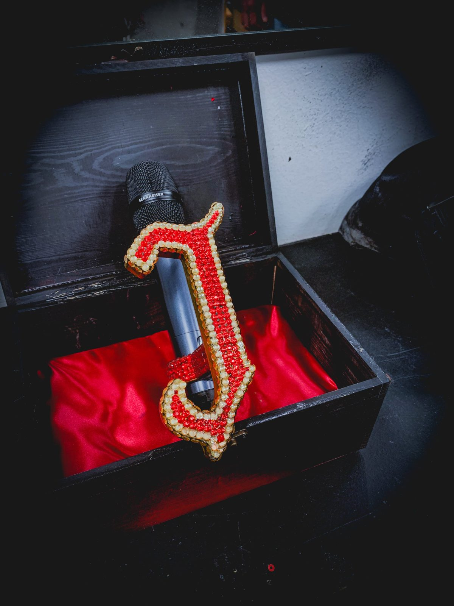
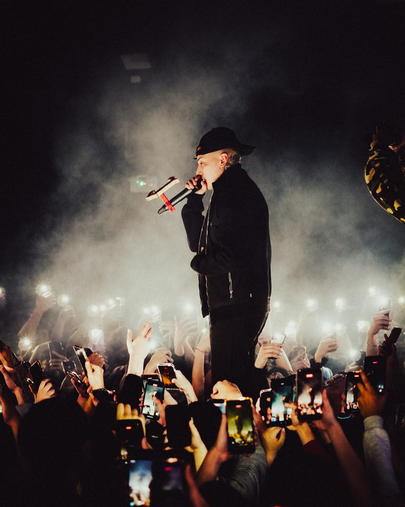
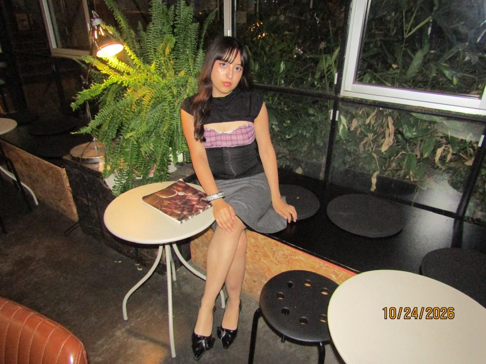
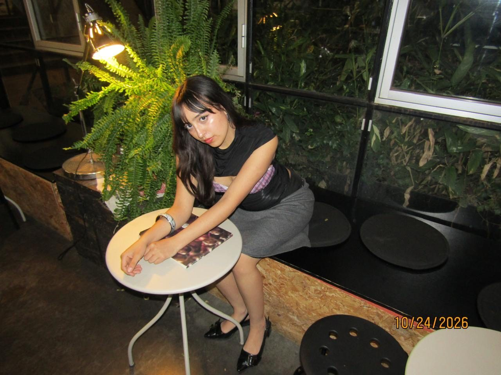
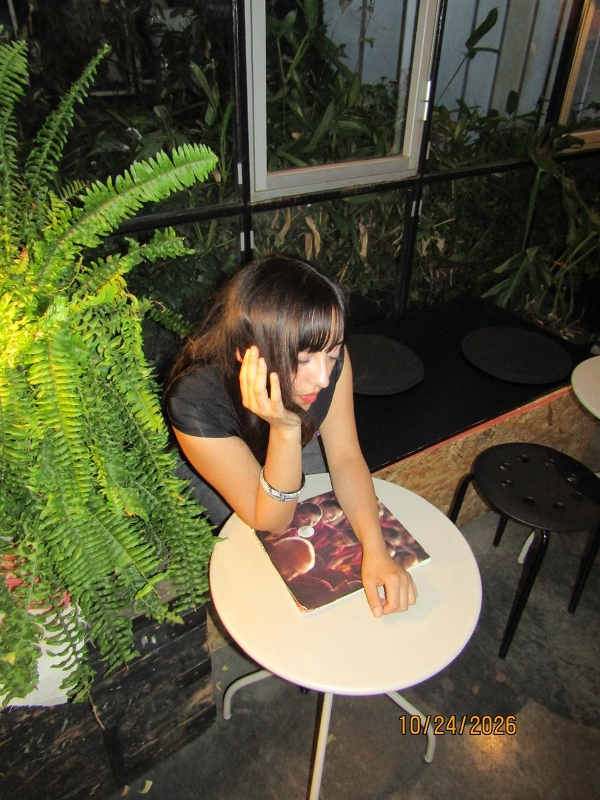

Estudiante de Diseño. Esta carta reúne proyectos, pruebas y exploraciones que dan cuenta de mi manera de observar, imaginar y crear.
Palabras, signos y formas se encuentran en la pantalla a través del código.
En P5.js, cada instrucción se convierte en una posibilidad visual. Las letras se repiten, se desplazan, cambian de escala y construyen composiciones a partir de la exploración entre lenguaje, programación e imagen.
Una serie de ejercicios donde escribir también significa dibujar.

Accesorio para micrófono
El proyecto nace de la exploración de una identidad gráfica y su traducción a un objeto.
A partir del diseño de un símbolo, desarrollé una pieza tridimensional pensada para integrarse al micrófono, modelándola digitalmente y llevándola a la fabricación mediante impresión 3D.
La propuesta busca trasladar el lenguaje visual del artista a una pieza tangible, donde forma, identidad y materialidad se encuentran para acompañar su presencia escénica.

Soy Joaquina, tengo 20 años y estudio Diseño en la PUCV.
Me interesa explorar distintas formas de crear, transitando entre lo manual y lo digital. Encuentro en el dibujo, la ilustración, el modelado tridimensional y el código creativo diferentes maneras de observar, interpretar y dar forma a las ideas.
Mi proceso nace de la curiosidad y de una sensibilidad hacia los detalles, las formas y las relaciones que se construyen entre ellos. Me gusta experimentar, descubrir posibilidades en lo inesperado y permitir que las ideas cambien a medida que toman forma.
Entiendo el diseño como una búsqueda constante, una manera de mirar con atención y transformar aquello que observo en nuevas posibilidades de expresión.



Acuarela
Tinta china
Procreate
ibisPaint
Fusion 360
AutoCAD
Nomad Sculpt
InDesign
p5.js
Visual Studio Code
Diseño, PUCV